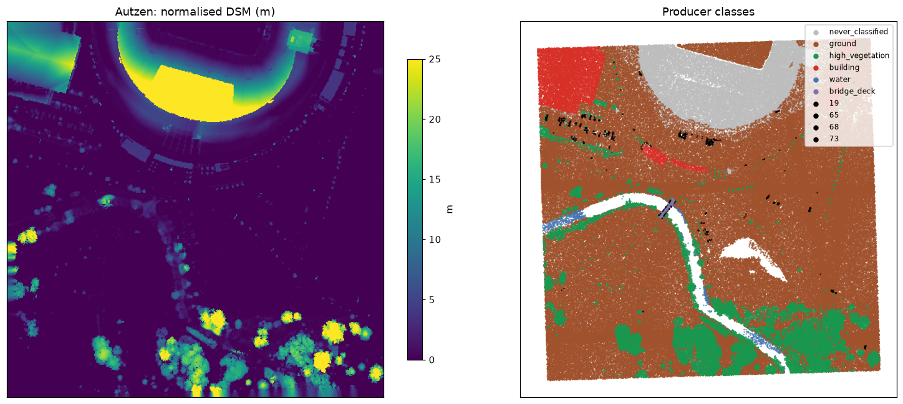
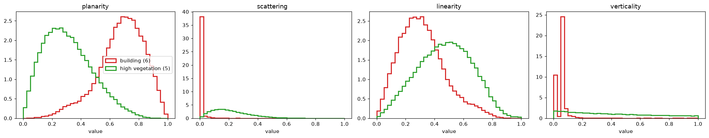
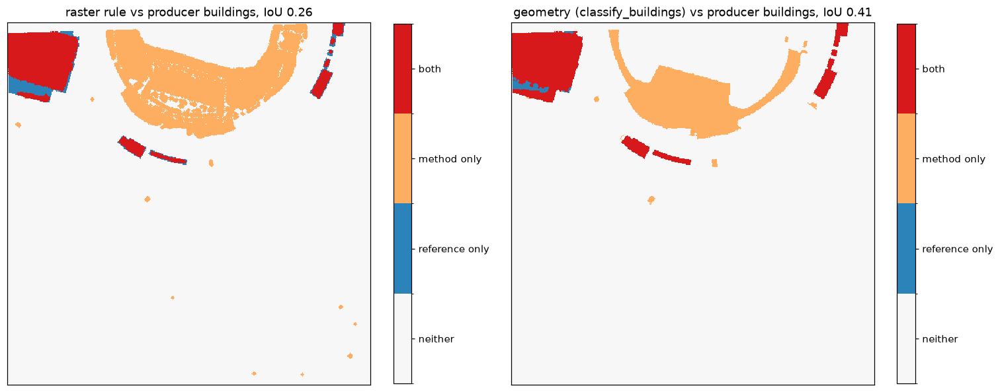
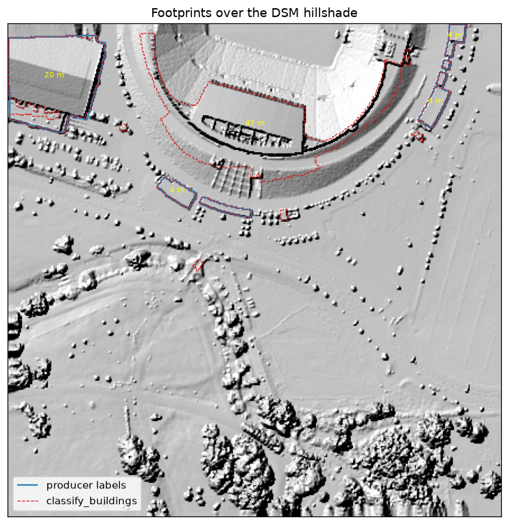
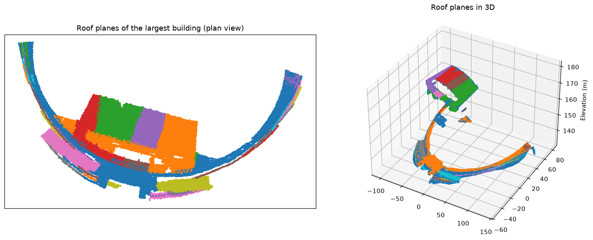
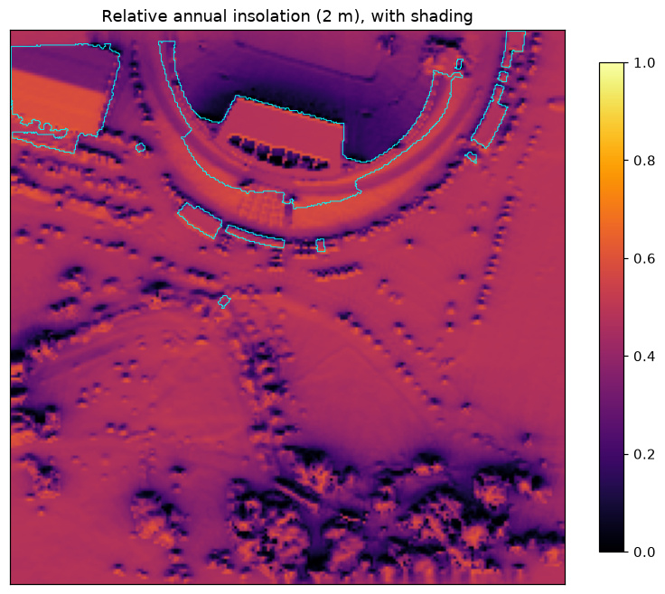
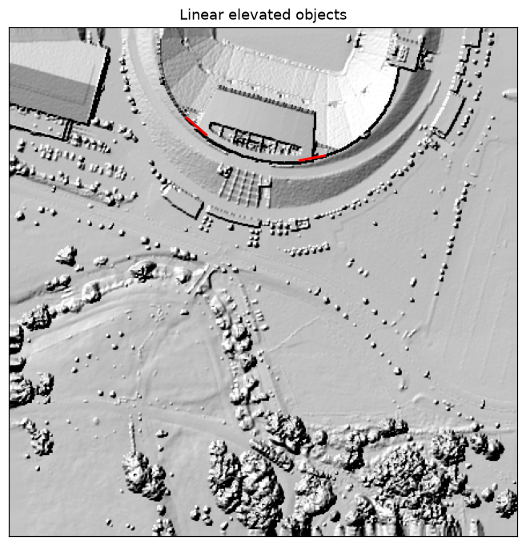
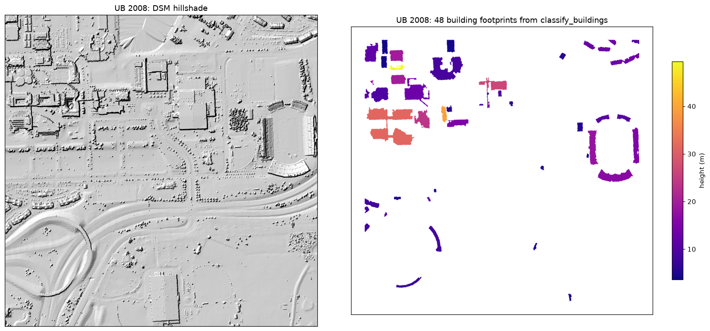
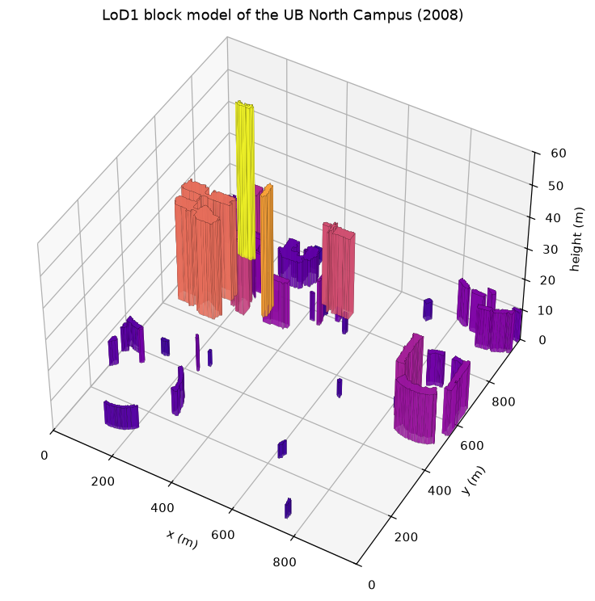

Roofs are flat or planar, solid and high above the ground, while trees are rough, porous and produce several returns per pulse. These differences let LiDAR separate buildings from vegetation, outline footprints, measure heights and roof shapes, and estimate how much sunlight each roof receives. This notebook does all of that with geolattice.rsense.lidar on the Autzen Stadium area in Eugene, Oregon, where the producer labelled building points, and then applies the label-free workflow to the 2008 survey of the University at Buffalo North Campus.
Overview
Urban applications of LiDAR
3D city models for planning, visualisation, noise and wind simulation, and digital twins. The CityGML standard defines levels of detail: LoD1 extrudes each footprint to one height (block model), LoD2 adds roof shapes, LoD3 adds facade detail.
Building inventories for property tax, population and energy models, and post-disaster damage assessment (comparing surveys before and after an earthquake or tornado).
Solar potential of roofs from their slope, aspect and shading by neighbouring buildings and trees.
Infrastructure: power-line clearance and vegetation encroachment, road surfaces and kerbs, bridges, street furniture and urban tree inventories.
Flood and drainage modelling, which needs buildings as obstacles and accurate street-level terrain.
How buildings differ from trees in a point cloud
Property
Roof
Tree crown
Local geometry
Planar: neighbours lie on a plane; the smallest eigenvalue of their covariance is near zero
Volumetric: points scatter in 3D
Returns per pulse
Mostly one (the roof is solid)
Several (pulses pass through gaps)
Height above ground
Uniform over the roof
Varies, peaks at the treetop
Object shape
Straight edges, right angles, large flat patches
Round, irregular
Eigenvalue features. For the \(k\) nearest neighbours of a point, the covariance matrix has eigenvalues \(\lambda_1 \ge \lambda_2 \ge \lambda_3\). Normalised combinations describe the local shape: linearity\((\lambda_1 - \lambda_2)/\lambda_1\) (wires, edges), planarity\((\lambda_2 - \lambda_3)/\lambda_1\) (roofs, ground, walls), scattering\(\lambda_3/\lambda_1\) (vegetation), and verticality\(1 - |n_z|\) from the normal vector (walls).
RANSAC planes. Random Sample Consensus (Fischler and Bolles 1981) repeatedly fits a plane through three random points and keeps the plane with the most points within a distance tolerance. Applied sequentially it splits a roof into its planar faces, each with a slope and aspect.
Building extraction workflows
Label-based: if the producer classified buildings (class 6), rasterise those points, close small gaps, vectorise to polygons and measure heights from the normalised DSM.
Rule-based on rasters: tall cells of the normalised DSM where most pulses return only once.
Point-based geometry: roof candidates are planar points above a height threshold; they are clustered into objects, and an object is a building when a few RANSAC planes explain most of its points (tree crowns fail this test).
Machine learning and deep learning on point features (see the point classification notebook).
Validation compares the extracted buildings with reference footprints or labels, using precision, recall and intersection over union (IoU).
Urban Analysis with GeoLattice
Learning objectives
Compare ground filters on large flat roofs and compute a normalised DSM.
Separate buildings from vegetation with eigenvalue features and RANSAC planes, and with a raster rule.
Validate building classifications against reference labels with precision, recall and IoU.
Extract footprints with heights, segment roof planes and estimate roof solar potential.
Detect wire-like objects with linearity features.
Apply the label-free workflow to an older, sparser survey and build an LoD1 block model.
Data
File
Content
autzen_window.laz
A 440 m x 440 m window of the Autzen Stadium survey, Eugene, Oregon: 1.36 million points, about 7 points/m², UTM zone 10N, with ground (2), high vegetation (5), buildings (6), water (9) and bridge deck (17) classified
University at Buffalo North Campus, New York, 2008: about 1 point/m², only ground classified
Contents
Setup
Ground filters, large roofs and the normalised DSM
Eigenvalue features of roofs and trees
Classifying buildings from geometry
A raster rule as a baseline
Building footprints and heights
Roof planes
Roof solar potential
Wires and other linear objects
Buildings on the UB campus without labels
An LoD1 block model
Exporting the products
Summary and exercises
Setup
Installation. This notebook needs installation option 5 (core, spatial analysis, spatial statistics, geostatistics and remote sensing): pip install "geolattice[remote-sensing]". See “Installation options” in the GeoLattice README.
Code
import warnings # warning controlwarnings.filterwarnings("ignore") # hide routine library warningsimport time # timingimport numpy as np # arraysimport pandas as pd # tablesimport geopandas as gpd # vector dataimport rasterio # raster I/Oimport matplotlib.pyplot as plt # figuresfrom mpl_toolkits.mplot3d.art3d import Poly3DCollection # 3D polygons for the block modelimport geolattice.rsense as rs # GeoLattice remote sensingfrom geolattice.rsense.core import ASPRS_CLASSES # ASPRS class code -> namerasterio.Env(CPL_LOG="/dev/null").__enter__() # silence GDAL log messagesplt.rcParams.update({"figure.dpi": 110}) # figure resolutionprint("geolattice.rsense", rs.__version__, "| backend:", rs.set_backend("cpu")) # version and array backend
geolattice.rsense 0.3.35 | backend: cpu
Code
from pathlib import Path # file paths# The notebook's data folder: ../../../../Data/08_remote_sensing/08_06_lidar/ next to this notebook, found from here or from the repository root.DATA =next((p for p in (Path("Data/08_remote_sensing/08_06_lidar"), Path("../../../../Data/08_remote_sensing/08_06_lidar"))if p.is_dir()), None)if DATA isNone: # neither location exists# stop with a clear messageraiseFileNotFoundError("Run the notebook from its own folder or from the GeoLattice repository root.")OUT = DATA.parent /"outputs"# folder for the products this notebook writesOUT.mkdir(exist_ok=True) # create it if neededAUTZEN = DATA /"autzen_window.laz"# labelled urban window, UTM 10NUB_TILES = [DATA /"UB"/"20080417_10901090_ld_p28.laz", DATA /"UB"/"20080417_10951090_ld_p28.laz"] # campus tiles
Ground filters, large roofs and the normalised DSM
The Autzen window holds the stadium, offices and several large buildings; the largest flat roof covers about 6,000 m². A morphological ground filter only removes objects narrower than its window, so large flat roofs are a hard test. The cell runs three ground filters and counts how many of the producer’s building points each one wrongly puts in the ground class. The producer’s classes are kept in a separate array (ref) for validation; the classification itself starts again from geometry only.
Code
autzen = rs.lidar.read_las(AUTZEN).drop_noise() # the labelled window without noiseref = np.asarray(autzen["classification"]).copy() # producer classes, kept for validationprint(autzen) # count, fields and CRSprint(pd.Series(ref).map(lambda k: ASPRS_CLASSES.get(int(k), f"user {k}")).value_counts().to_string()) # reference classesrows, grounds = {}, {} # one row per filterfor name, fn in (("SMRF, 100 m window", lambda: rs.lidar.smrf(autzen, cell=2.0, slope=0.15, window=100)), # SMRF ("CSF, rigidness 3", lambda: rs.lidar.csf(autzen, resolution=2.0, rigidness=3)), # stiff cloth ("PMF, 200 m window", lambda: rs.lidar.pmf(autzen, cell=2.0, max_window=200))): # exponential windows t0 = time.perf_counter() # start the timer grounds[name] = fn() # classify ground gc = np.asarray(grounds[name]["classification"]) ==2# predicted ground rows[name] = {"building points put in ground": np.mean(gc[ref ==6]), # roof absorbed into the terrain"ground agreement with producer": np.mean(gc == (ref ==2)), "seconds": time.perf_counter() - t0}display(pd.DataFrame(rows).T.round(3)) # comparisont0 = time.perf_counter() # start the timerag = grounds["PMF, 200 m window"] # the filter that keeps the big roof off the groundadem = rs.lidar.dem(ag, 1.0) # DEMadsm = rs.lidar.dsm(ag, 1.0, bounds=ag.bbox).reindex_like(adem, method="nearest") # DSM on the same gridandsm = rs.lidar.chm(adsm, adem, pit_free=False) # normalised DSM (heights of all objects)agn = rs.lidar.normalize_heights(ag, adem) # per-point height above groundprint(f"surfaces in {time.perf_counter() - t0:.1f} s") # timingfig, axes = plt.subplots(1, 2, figsize=(14, 6)) # two panelsrs.viz.plot_raster(andsm, ax=axes[0], cmap="viridis", vmin=0, vmax=25, title="Autzen: normalised DSM (m)") # nDSMrs.lidar.plot_classification(autzen, ax=axes[1], s=0.2) # producer classesaxes[1].set_title("Producer classes") # titlefor a in axes: a.set_xticks([]); a.set_yticks([]) # no ticksplt.tight_layout(); plt.show() # draw
<PointCloud 1,357,111 pts [CPU] fields=['x', 'y', 'z', 'intensity', 'return_number', 'number_of_returns', 'classification', 'scan_angle', 'gps_time', 'user_data', 'point_source_id'] bbox=(494273.6, 4877903.0, 494712.8, 4878342.3) crs=32610>
ground 1001924
high_vegetation 160100
never_classified 136472
building 50783
water 3416
user 65 1769
bridge_deck 1238
user 19 1179
user 68 173
user 73 57
building points put in ground
ground agreement with producer
seconds
SMRF, 100 m window
0.695
0.901
33.522
CSF, rigidness 3
0.431
0.932
0.875
PMF, 200 m window
0.064
0.944
0.142
surfaces in 4.3 s

SMRF with a 100 m window puts about 70 % of the producer’s building points into the ground class, and the stiff cloth of CSF about 43 %: the largest roof is wide and flat, so to these filters it looks like a raised terrace. PMF grows its window exponentially up to 200 m, keeps 94 % of the building points out of the ground, agrees best with the producer’s ground class overall and runs in a fraction of a second. The rest of the notebook uses the PMF ground.
Eigenvalue features of roofs and trees
rs.lidar.eigen_features computes the covariance features of every point’s k nearest neighbours. The histograms compare points the producer labelled as building (6) with high vegetation (5): roofs are planar with near-zero scattering, crowns scatter.
Code
t0 = time.perf_counter() # start the timerabove = agn.filter(np.asarray(agn["height"]) >2) # points more than 2 m above groundref_above = ref[np.asarray(agn["height"]) >2] # their producer classesef = rs.lidar.eigen_features(above, k=16, features=("linearity", "planarity", "scattering", "verticality")) # featuresprint(f"eigen features for {len(above):,} points in {time.perf_counter() - t0:.1f} s") # timingfig, axes = plt.subplots(1, 4, figsize=(19, 3.8)) # four panelsfor ax, f inzip(axes, ("planarity", "scattering", "linearity", "verticality")): # each feature v = np.asarray(ef[f]) # valuesfor cls, col, lab in ((6, "C3", "building (6)"), (5, "C2", "high vegetation (5)")): # two classes# histogram of this class ax.hist(v[ref_above == cls], bins=np.linspace(0, 1, 41), density=True, histtype="step", lw=2, color=col, label=lab) ax.set(title=f, xlabel="value") # labelsaxes[0].legend(); plt.tight_layout(); plt.show() # draw
eigen features for 299,080 points in 3.2 s

Classifying buildings from geometry
rs.lidar.classify_buildings uses these features and object-level RANSAC tests: points at least 2.5 m above ground with low scattering and linearity are roof candidates; candidates are clustered; a cluster is a building when up to six planes no steeper than 60° explain at least 80 % of its points; accepted roofs then grow to adjacent points (edges, walls), and all other above-ground points become vegetation by height. The result is compared point by point with the producer’s building class.
A simple label-free rule on 1 m rasters: cells of the normalised DSM higher than 2.5 m where fewer than 15 % of the returns come from multi-return pulses, cleaned with a morphological opening. Comparing it with the producer’s building mask at the raster level shows what the point-based geometry adds.
Code
from scipy import ndimage as nd # morphology# returns from multi-return pulses per cellmulti = rs.lidar.rasterize(autzen.filter(np.asarray(autzen["number_of_returns"]) >1), 1.0, stat="count", bounds=autzen.bbox).reindex_like(adem, method="nearest").fillna(0) # multi-return pointsallr = rs.lidar.rasterize(autzen, 1.0, stat="count", bounds=autzen.bbox).reindex_like(adem, method="nearest") # all pointsrule = ((andsm >2.5) & (multi / allr <0.15)).values # tall and mostly single returnrule = nd.binary_opening(rule, iterations=2) # remove small specksdef mask_of(cls_array, cloud, code=6): # 1 m raster mask of points with a class code m = rs.lidar.rasterize(cloud.filter(cls_array == code), 1.0, stat="count", bounds=autzen.bbox) # count per cellreturn nd.binary_closing(m.reindex_like(adem, method="nearest").fillna(0).values >0, iterations=1) # closed maskref_mask = mask_of(ref, autzen) # producer buildingsgeo_mask = mask_of(cb, bld) # classify_buildings resultmasks = {"raster rule": rule, "geometry (classify_buildings)": geo_mask} # the two methodsdisplay(pd.DataFrame({k: binary_scores(m, ref_mask) for k, m in masks.items()}).T.round(3)) # raster-level scoresfig, axes = plt.subplots(1, 2, figsize=(14, 6.5)) # two panelscat = {0: ("neither", "#f7f7f7"), 1: ("reference only", "#2b83ba"), 2: ("method only", "#fdae61"), 3: ("both", "#d7191c")} # legendfor ax, (name, m) inzip(axes, masks.items()): # each methodcmp= adem.copy(data=(m.astype(int) *2+ ref_mask.astype(int))) # comparison codes iou = binary_scores(m, ref_mask)["IoU"] # IoU rs.viz.plot_raster(cmp, ax=ax, categorical=cat, title=f"{name} vs producer buildings, IoU {iou:.2f}") # map ax.set_xticks([]); ax.set_yticks([]) # no ticksplt.tight_layout(); plt.show() # draw
precision
recall
F1
IoU
raster rule
0.271
0.837
0.409
0.257
geometry (classify_buildings)
0.419
0.951
0.582
0.410

Both methods find almost all of the producer’s buildings (recall 0.84 for the raster rule, 0.95 for classify_buildings), but their precision is low, and the maps show why. Most of the “method only” area is the stadium bowl, which the producer did not label as a building although both methods find it: a reference error rather than a method error. The remaining differences are method errors: dense tree crowns with flat tops pass the raster rule as small specks, and the geometric method also takes in the flat field inside the stadium, which sits on the stands. The point-based geometry is clearly better (IoU 0.41 against 0.26). Low agreement can mean an imperfect method, imperfect labels or both, so disagreements should be inspected before trusting either.
Building footprints and heights
rs.lidar.building_footprints rasterises the building points, closes small gaps, vectorises the mask into polygons, removes slivers smaller than min_area and adds the area, the height (95th percentile of roof heights above the DEM) and the number of points of each building. Matching the footprints from classify_buildings to those from the producer labels gives a per-building comparison.
Code
ref_cloud = rs.lidar.normalize_heights(autzen.with_field("classification", ref.astype("uint8")), adem) # producer labels + heightsfp_ref = rs.lidar.building_footprints(ref_cloud, res=1.0, min_area=30, dtm=adem) # reference footprintsfp_geo = rs.lidar.building_footprints(rs.lidar.normalize_heights(bld, adem), res=1.0, min_area=30, dtm=adem) # extractedprint(f"reference footprints: {len(fp_ref)} | extracted: {len(fp_geo)}") # counts# overlaps between reference and extracted footprintsinter = gpd.overlay(fp_ref[["geometry"]].reset_index(names="ref_id"), fp_geo[["geometry"]].reset_index(names="geo_id"), how="intersection") # overlaps between the two setsinter["a"] = inter.area # overlap areabest = inter.sort_values("a").groupby("ref_id").last() # best-matching extracted footprint per reference buildingmatch = fp_ref[["area_m2", "height_m"]].join(best[["geo_id", "a"]]) # reference attributes plus matchmatch["IoU"] = [row.a / (row.area_m2 + fp_geo.area[int(row.geo_id)] - row.a) if pd.notnull(row.geo_id) else0# polygon IoUfor row in match.itertuples()]match["height extracted (m)"] = [fp_geo.height_m[int(g)] if pd.notnull(g) else np.nan for g in match.geo_id] # heightmatch.sort_values("area_m2", ascending=False).head(10).drop(columns="a").round(2) # largest reference buildings
reference footprints: 6 | extracted: 12
area_m2
height_m
geo_id
IoU
height extracted (m)
1
6116.0
19.32
2
0.93
19.52
3
592.0
4.43
5
0.99
4.43
4
478.0
3.97
8
1.00
3.97
0
310.0
4.45
0
1.00
4.45
5
300.0
4.51
9
1.00
4.51
2
47.0
4.50
4
1.00
4.49
Code
fig, ax = plt.subplots(figsize=(9, 8.5)) # one panelrs.viz.plot_raster(rs.lidar.hillshade(adsm), ax=ax, cmap="gray", colorbar=False, title="Footprints over the DSM hillshade") # relieffp_ref.boundary.plot(ax=ax, color="#2b83ba", lw=1.5, label="producer labels") # reference outlinesfp_geo.boundary.plot(ax=ax, color="#d7191c", lw=0.8, ls="--", label="classify_buildings") # extracted outlinesfor _, r in fp_geo.iterrows(): # each extracted buildingif r.area_m2 >300: # label the larger ones# label ax.text(r.geometry.centroid.x, r.geometry.centroid.y, f"{r.height_m:.0f} m", fontsize=7, color="yellow", ha="center")ax.legend(loc="lower left"); ax.set_xticks([]); ax.set_yticks([]); plt.show() # draw

Roof planes
rs.lidar.segment_roof_planes extracts planes one after another with RANSAC from the points of one building and splits each plane’s inliers into connected patches. Each plane gets a slope and an aspect, the inputs for LoD2 roof models and for solar analysis. The cell segments the largest building found.
Code
b_pts = bld.filter(cb ==6) # building pointslabels_b = rs.lidar.euclidean_clusters(b_pts, radius=1.5, min_points=50, dims=2) # one cluster per buildingbig = b_pts.filter(labels_b ==0) # the largest building (cluster 0)planes_pc, planes = rs.lidar.segment_roof_planes(big, distance=0.15, min_points=40, max_planes=12) # RANSAC planesdisplay(planes[["slope_deg", "aspect_deg", "n_points"]].round(1)) # one row per planepid = np.asarray(planes_pc["plane_id"]) # plane of each pointfig = plt.figure(figsize=(14, 5.5)) # two panelsax1 = fig.add_subplot(1, 2, 1) # plan viewax1.scatter(big.x, big.y, c=np.where(pid >=0, pid %10, np.nan), cmap="tab10", s=2) # points by planeax1.set(title="Roof planes of the largest building (plan view)", aspect="equal", xticks=[], yticks=[]) # labelsax2 = fig.add_subplot(1, 2, 2, projection="3d") # 3D viewax2.scatter(big.x - big.x.mean(), big.y - big.y.mean(), big.z, c=np.where(pid >=0, pid %10, -1), cmap="tab10", s=1) # 3Dax2.set(title="Roof planes in 3D", zlabel="Elevation (m)"); ax2.view_init(35, -60) # labels and angleplt.tight_layout(); plt.show() # draw
slope_deg
aspect_deg
n_points
0
0.1
357.0
10538
1
3.8
115.1
7644
2
2.3
275.4
5007
3
2.3
275.4
1097
4
0.9
142.0
3656
5
0.9
142.0
789
6
3.5
349.6
2821
7
3.5
349.6
194
8
3.6
37.0
2419
9
3.6
37.0
111
10
3.6
37.0
45
11
0.2
212.5
3067
12
0.2
212.5
70
13
0.2
212.5
49
14
0.8
208.6
453
15
0.8
208.6
386
16
0.8
208.6
257
17
0.8
208.6
208
18
0.8
208.6
108
19
0.8
208.6
105
20
0.8
208.6
57
21
0.8
208.6
56
22
0.8
208.6
51
23
4.5
277.8
2787
24
0.5
185.7
272
25
0.5
185.7
243
26
0.5
185.7
177
27
0.5
185.7
142
28
0.5
185.7
132
29
0.5
185.7
123
30
0.5
185.7
113
31
0.5
185.7
57
32
0.4
126.9
283
33
0.4
126.9
192
34
0.4
126.9
156
35
0.4
126.9
108
36
0.4
126.9
87
37
0.4
126.9
85
38
0.4
126.9
82
39
0.4
126.9
63
40
0.0
39.8
717
41
0.0
39.8
664

Roof solar potential
rs.lidar.solar_potential averages the cosine of the solar incidence angle over a set of sun positions (here every hour from 6:00 to 18:00 solar time on one day per month at 44° N), optionally with cast shadows traced along each sun direction across the DSM. Values are relative (1 = a surface facing the sun at every position). With footprints it reports the mean value per roof and the area that is both well lit and not too steep.
Code
t0 = time.perf_counter() # start the timerdsm2 = adsm.coarsen(x=2, y=2, boundary="trim").max().rio.write_crs(adsm.rio.crs) # 2 m DSM keeps the run short# relative insolation with shadingsolar = rs.lidar.solar_potential(dsm2, latitude=44.05, days=np.arange(15, 365, 30), hours=np.arange(6, 19), shading=True) # relative insolation with shadows# summary per roofroofs = rs.lidar.solar_potential(dsm2, latitude=44.05, days=np.arange(15, 365, 30), hours=np.arange(6, 19), footprints=fp_geo, shading=True) # per-roof summaryprint(f"solar potential in {time.perf_counter() - t0:.1f} s") # timingfig, ax = plt.subplots(figsize=(9, 8)) # one panelrs.viz.plot_raster(solar, ax=ax, cmap="inferno", vmin=0, vmax=1, title="Relative annual insolation (2 m), with shading") # mapfp_geo.boundary.plot(ax=ax, color="cyan", lw=0.6) # roof outlinesax.set_xticks([]); ax.set_yticks([]); plt.show() # drawroofs.drop(columns="geometry").sort_values("suitable_area_m2", ascending=False).head(8).round(2) # best roofs
solar potential in 14.3 s

building_id
area_m2
z_max
n_points
height_m
solar_mean
suitable_area_m2
1
2
10078.0
179.96
55017
47.28
0.43
6536.0
2
3
5739.0
155.47
38329
19.52
0.46
3112.0
5
7
595.0
134.85
3017
4.43
0.45
444.0
8
17
479.0
133.83
2432
3.97
0.48
412.0
0
1
310.0
135.40
2023
4.45
0.45
232.0
9
21
300.0
134.49
1530
4.51
0.43
184.0
10
22
58.0
133.82
312
3.97
0.45
40.0
11
23
51.0
131.12
328
3.37
0.45
28.0
Wires and other linear objects
Power lines are thin, elevated and strongly linear. rs.lidar.detect_power_lines keeps points at least 5 m above ground with linearity above 0.85, clusters them and keeps clusters longer than 15 m as wires (ASPRS class 14). At 7 points/m² wires are only partly sampled, so the detections are fragments; dedicated corridor surveys from helicopters reach hundreds of points per m².
Code
t0 = time.perf_counter() # start the timerwires_pc, wires = rs.lidar.detect_power_lines(agn, dtm=adem, min_height=5, linearity=0.85, min_length=15) # wire candidatesprint(f"{len(wires)} linear objects longer than 15 m in {time.perf_counter() - t0:.1f} s") # resultiflen(wires): # anything found display(wires.drop(columns="geometry").round(1).head(10)) # their length and height fig, ax = plt.subplots(figsize=(8, 7.5)) # one panel rs.viz.plot_raster(rs.lidar.hillshade(adsm), ax=ax, cmap="gray", colorbar=False, title="Linear elevated objects") # relief wires.plot(ax=ax, color="red", lw=2); ax.set_xticks([]); ax.set_yticks([]); plt.show() # draw
2 linear objects longer than 15 m in 2.4 s
length_m
height_m
n_points
0
24.2
18.0
52
1
23.9
17.0
47

Buildings on the UB campus without labels
The 2008 UB survey has about 1 point/m² and only ground classified, so the label-free workflow is the only option. The two tiles are reprojected to UTM zone 17N; the analysis uses the same 1 km block as the processing notebook; ground is reclassified with PMF and windows up to 120 m on a 2 m grid (the campus buildings are large), and classify_buildings then separates buildings from trees. With only one or two points per m², plane tests need lower point counts per cluster.
Code
ub = rs.lidar.reproject(rs.lidar.merge_pointclouds([rs.lidar.read_las(p) for p in UB_TILES]), 26917).drop_noise() # metresucx, ucy = np.mean(ub.bbox[::2]), np.mean(ub.bbox[1::2]) # centre of the two tilesub = ub.crop(ucx -500, ucy -500, ucx +500, ucy +500) # a 1 km x 1 km block of the campust0 = time.perf_counter() # start the timerubg = rs.lidar.pmf(ub, cell=2.0, max_window=120) # ground with PMF, wide windowsudem = rs.lidar.dem(ubg, 1.0) # DEMubn = rs.lidar.normalize_heights(ubg, udem) # heights above groundubb = rs.lidar.classify_buildings(ubg, dtm=udem, min_height=3.0, min_points=15, cluster_radius=2.5, k=12) # buildings# UB footprints with heightsfp_ub = rs.lidar.building_footprints(rs.lidar.normalize_heights(ubb, udem), res=1.0, min_area=80, dtm=udem, close_iter=2) # footprints# summary lineprint(f"UB: {len(ub):,} points | {len(fp_ub)} buildings, {fp_ub.area_m2.sum() /1e4:.1f} ha of roof | "f"{time.perf_counter() - t0:.0f} s") # summaryudsm = rs.lidar.dsm(ubg, 1.0, bounds=ubg.bbox).reindex_like(udem, method="nearest") # DSMfig, axes = plt.subplots(1, 2, figsize=(16, 7)) # two panelsrs.viz.plot_raster(rs.lidar.hillshade(udsm), ax=axes[0], cmap="gray", colorbar=False, title="UB 2008: DSM hillshade") # relief# footprints coloured by heightfp_ub.plot(ax=axes[1], column="height_m", cmap="plasma", legend=True, legend_kwds={"label": "height (m)", "shrink": 0.7})axes[1].set(title=f"UB 2008: {len(fp_ub)} building footprints from classify_buildings", aspect="equal") # titlefor a in axes: a.set_xticks([]); a.set_yticks([]) # no ticksplt.tight_layout(); plt.show() # drawfp_ub.drop(columns="geometry").describe().loc[["count", "mean", "50%", "max"]].round(1) # summary statistics
UB: 1,028,848 points | 48 buildings, 6.1 ha of roof | 24 s

building_id
area_m2
z_max
n_points
height_m
count
48.0
48.0
48.0
48.0
48.0
mean
92.8
1278.9
193.9
1005.4
12.4
50%
89.5
627.0
192.0
470.0
10.3
max
194.0
11452.0
227.8
7133.0
49.4
With only one or two points per m² and almost no multiple returns (see the processing notebook), the label-free workflow finds most of the campus buildings, including the tall residence and academic blocks in the north-west and the stands around the stadium. Its errors are instructive. Curved highway ramps and bridge decks in the south are elevated, planar and single-return, so they pass the building test; a road layer or a height-above-road rule would remove them. Some large flat roofs in the centre are missed, because the sparse roof points are not grouped into large enough clusters. Older, sparse surveys need lower thresholds and more checking than modern dense ones.
An LoD1 block model
An LoD1 model extrudes each footprint to its height. Drawing the footprints as prisms on top of the terrain gives a simple 3D view of the campus.
Code
fig = plt.figure(figsize=(12, 8)); ax = fig.add_subplot(projection="3d") # 3D axesox, oy = ub.bbox[0], ub.bbox[1] # local origin for readable axesbase_z =float(np.nanmedian(udem.values)) # a common base heightfor _, r in fp_ub.iterrows(): # each building geom = r.geometry.simplify(1.0) # simplified outline polys =list(geom.geoms) if geom.geom_type =="MultiPolygon"else [geom] # its partsfor p in polys: # each part xs, ys = np.asarray(p.exterior.xy) # outline coordinates xs, ys = xs - ox, ys - oy # local coordinates top = [list(zip(xs, ys, np.full(len(xs), r.height_m)))] # roof polygon# one wall per outline segment walls = [[(xs[i], ys[i], 0), (xs[i +1], ys[i +1], 0), (xs[i +1], ys[i +1], r.height_m), (xs[i], ys[i], r.height_m)]for i inrange(len(xs) -1)] # wall quadrilaterals col = plt.cm.plasma(min(float(r.height_m) /50.0, 1.0)) # colour by height (float in 0 to 1) ax.add_collection3d(Poly3DCollection(top + walls, facecolor=col, edgecolor="k", linewidth=0.1, alpha=0.9)) # prism# axes and titleax.set(xlim=(0, ub.bbox[2] - ox), ylim=(0, ub.bbox[3] - oy), zlim=(0, 60), xlabel="x (m)", ylabel="y (m)", zlabel="height (m)", title="LoD1 block model of the UB North Campus (2008)") # axesax.view_init(45, -60); plt.show() # draw

Exporting the products
Code
gpkg = OUT /"urban_buildings.gpkg"# vector outputfp_ref.to_file(gpkg, layer="autzen_reference", driver="GPKG") # reference footprintsfp_geo.to_file(gpkg, layer="autzen_extracted", driver="GPKG") # extracted footprintsroofs.to_file(gpkg, layer="autzen_roof_solar", driver="GPKG") # roofs with solar potentialfp_ub.to_file(gpkg, layer="ub_buildings", driver="GPKG") # UB footprintsiflen(wires): # wires, if any wires.to_file(gpkg, layer="autzen_wires", driver="GPKG") # wire linesrs.write(andsm.astype("float32"), OUT /"autzen_ndsm_1m.tif") # normalised DSMrs.write(solar.astype("float32"), OUT /"autzen_solar_2m.tif") # solar potentialrs.lidar.write_las(ubb, OUT /"ub_buildings_classified.laz") # UB with buildings and vegetation classesfor p in (gpkg, OUT /"autzen_ndsm_1m.tif", OUT /"autzen_solar_2m.tif", OUT /"ub_buildings_classified.laz"): # listprint(f"{p.name:30s}{p.stat().st_size /1e6:6.1f} MB") # name and size